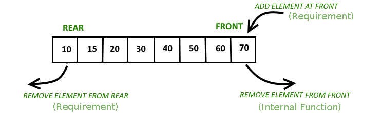

Copyright ©2018. All rights reserved. Created by CoDev
Η δομή αυτή κυκλοφορεί με πολλά ονόματα. Ίσως αυτό που μας δίνει να καταλάβουμε καλύτερα περί τίνος πρόκειται είναι το Monotonous Deque. Η βασική δουλειά βέβαια γίνεται από το ένα άκρο, οπότε (λανθασμένα) κυκλοφορεί και ως Monotonous Stack, ή και ως Stack of Incomplete Subproblems λόγω της πιο συνηθισμένης εφαρμογής της. Η σωστή ονομασία της είναι Priority Queue with Attrition (PQA).
Οι απαιτήσεις αυτής της δομής είναι αυτές μίας απλής queue και τα ερωτήματα είναι του τύπου: Ποιο είναι το ελάχιστο στοιχείο στη δομή μας; Καταφέρνουμε να υποστηρίξουμε τα πάντα σε amortized O(1) χρόνο. Οπτικά είναι μια deque χωρίς εισαγωγή στο αριστερό άκρο, με τα στοιχεία της ταξινομημένα (αυτό θα προκύψει με φυσικό τρόπο παρακάτω). 
Η βασική ιδέα είναι ο χαρακτηρισμός ενός στοιχείου X ως άχρηστου όταν εισήχθη πριν από κάποιο άλλο Y και είναι ταυτόχρονα μεγαλύτερο από αυτό (X≥Y). Το λέμε άχρηστο διότι, αφού τα operations είναι σαν της queue, θα βγει πριν το Y, και μέχρι να βγει δε θα είναι ποτέ το μικρότερο. Έτσι, όταν εισάγουμε ένα καινούριο στοιχείο, αφαιρούμε όλα τα άχρηστα που προκλήθηκαν εξαιτίας αυτού. Αυτό διατηρεί και τη μονοτονία της δομής.
Αναλυτικότερα διαβάζουμε θεωρία από εδώ.
Υποσημείωση (πλήρως άχρηστη για διαγωνισμούς): Όσα αναφέραμε μπορούν να επιτευχθούν και σε worst-case O(1) χρόνο, όπως έδειξε ο Sundar.